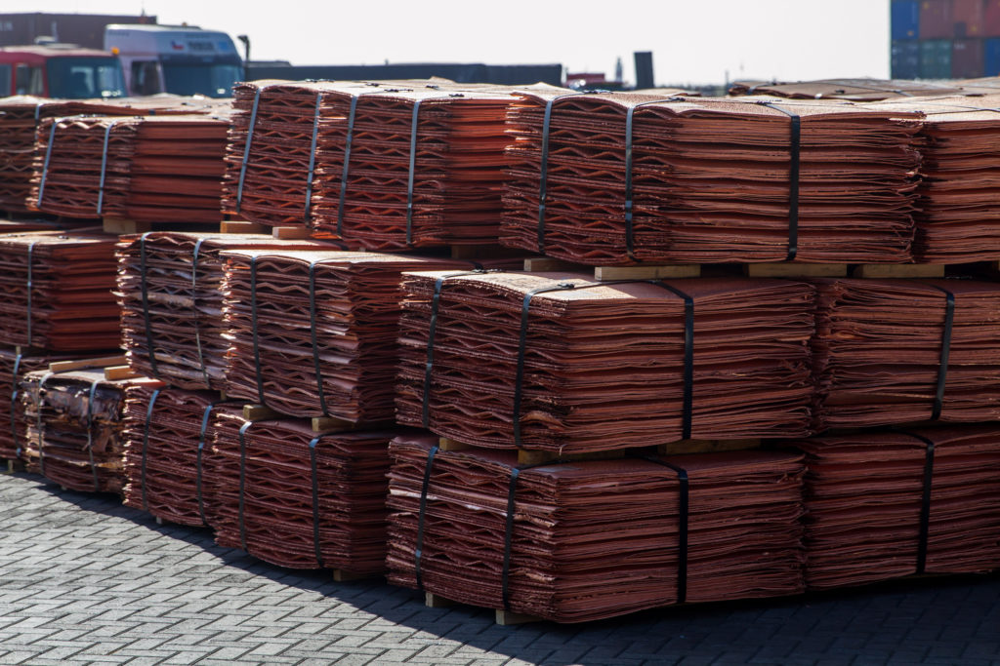
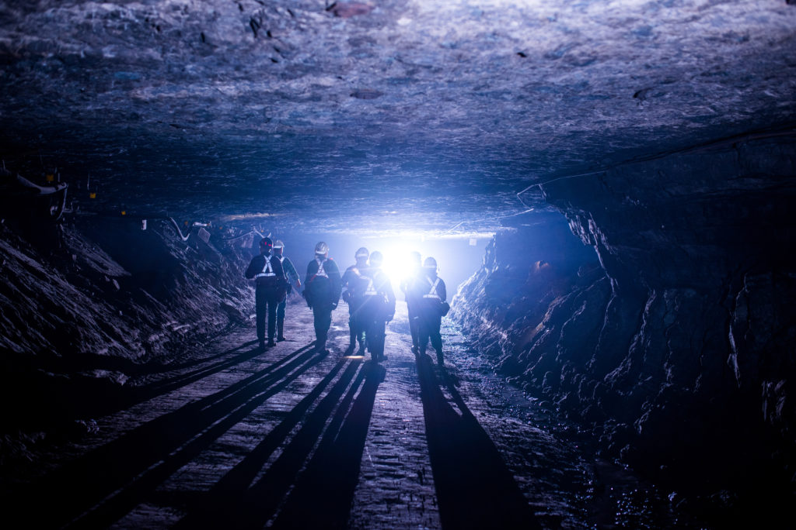
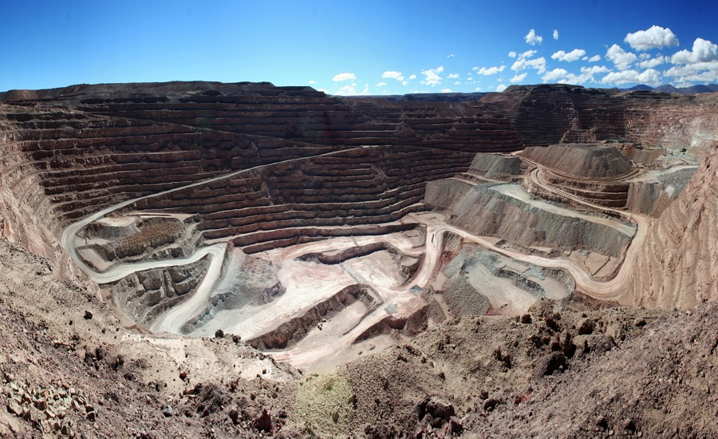
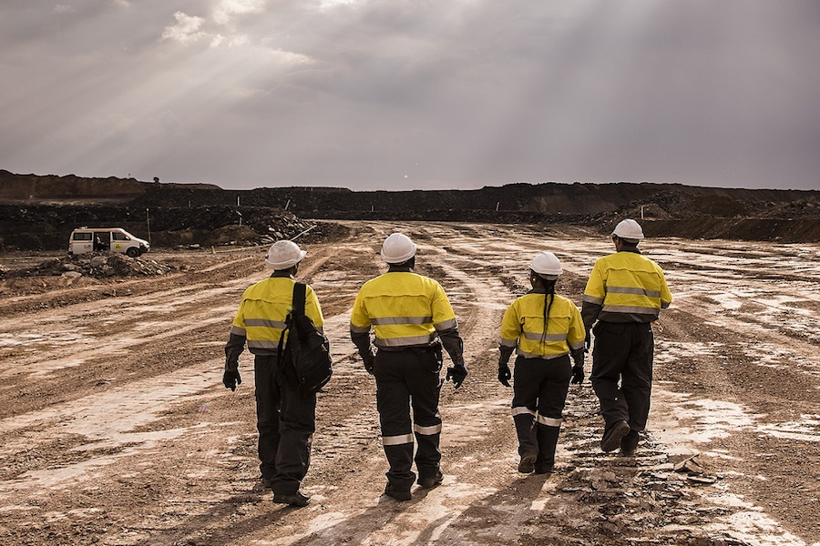
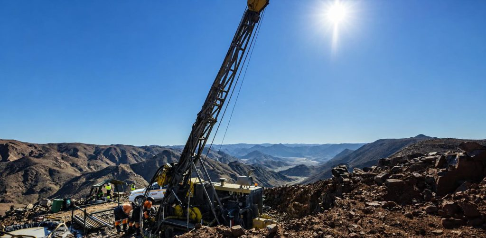
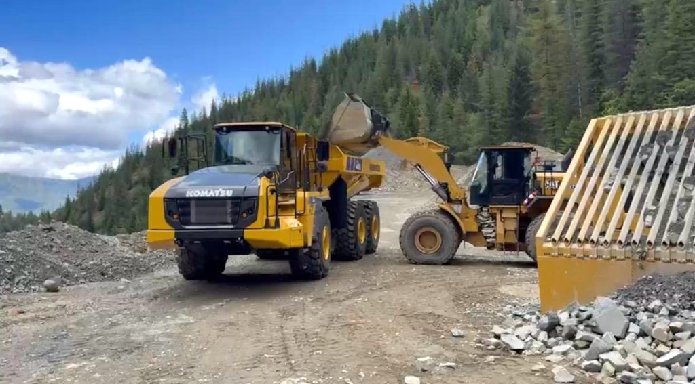

每日金属矿业
Daily Reports
View All

2026-07-05 矿业 Broadcast & 供需新闻
本页以金、银、铜矿业供需为主线，不再把 CSV 名单当作硬过滤器；名单人物、公司高管、播客嘉宾、新闻人物都可纳入，并标注背景。窗口内重点是 Adani 铜冶炼品牌进入 LME 交割体系，以及 Zimbabwe 高金价下黄金勘探与化验需求升温；X 原帖当前仍需官方 API 或登录态工具验证。

2026-07-04 矿业 Broadcast & 供需新闻
供给管线推进最集中：KGHM 铜银投资计划、Red Chris 扩建承诺、Faraday Copper 资产组合扩大，以及 Antofagasta 在智利铜项目的许可推进。本期没有发现窗口内合格公开访谈；X 原帖无法稳定验证，因此不摘录不可核验内容。

2026-07-03 矿业 Broadcast & 供需新闻
铜供给恢复与黄金运营风险并存：BHP 寻求重启 Cerro Colorado，Hudbay 提升 Constancia 处理能力，Agnico Eagle 因 Barnat open pit 岩体移动提示黄金产量短期受扰。未来同类公司访谈即便嘉宾不在原名单内，也应按项目与供需重要性纳入。

2026-07-02 矿业 Broadcast & 供需新闻
黄金投资需求与矿业资产重配是主线：黄金受利率路径预期影响反弹，同时 South32 出售铝业务后把资本焦点转向铜、锌、银、铅等资产组合。新闻简报、访谈、X 内容只要给出供需线索，均应记录来源和人物背景。

2026-07-01 矿业 Broadcast & 供需新闻
铜与黄金供给管线并行：Koryx Copper 的 Namibia Haib 钻探推进铜资源转化，Fortuna 的 Senegal Diamba Sud 可研强化黄金供给管线；黄金价格承压则反映投资需求受高利率预期牵制。相关访谈不再因嘉宾不在种子名单而自动排除。

2026-06-30 矿业 Broadcast & 供需新闻
Bunker Hill Mining 在 Idaho mill 开始处理矿石并向设计处理能力爬坡，对应北美白银副产品与铅锌矿山供给恢复。该类项目进展、公司访谈、建设照片和管理层表态都属于日报应跟踪的供需线索。